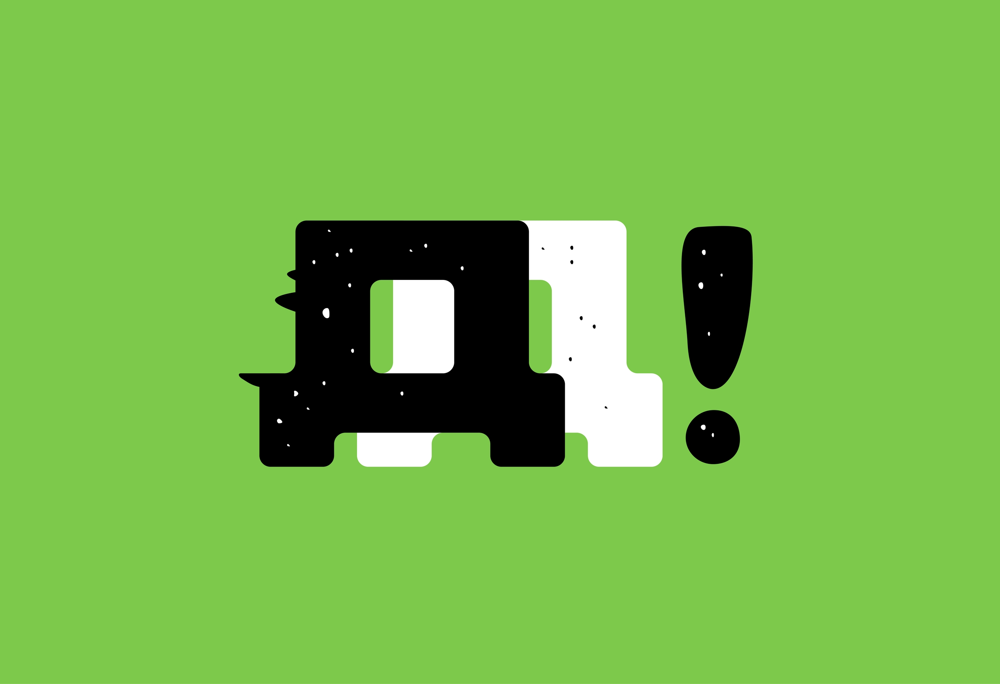

Мотофестиваль «Дайте Дорогу»

ДАЙТЕ ДОРОГУ — это не просто фестиваль. Это история людей, которые однажды выехали «просто прокатиться»… и что-то пошло не так 😄 Этот фестиваль делаем мы. Те, для кого мотоцикл — это не «по выходным», а «ну я на 5 минут и вернусь… наверное». Те, кто знает, что такое ночные трассы, дальние маршруты, мокрый асфальт под фарами и тот самый момент, когда стоишь на заправке в 3 ночи и думаешь: «Как же хорошо… и зачем мне вообще дом?»
Идея «ДАЙТЕ ДОРОГУ» родилась не в офисе. Она родилась там, где всё настоящее — в дороге. В разговорах «ещё по одной и поехали», в колоннах, где никто никуда не спешит, но почему-то все приезжают туда, куда надо.
Здесь нет случайных людей. Если ты сюда попал — значит, либо тебя привели… либо ты сам понял, что тебе сюда. Потому что это место, где «привет» через 10 минут превращается в «брат, давай обниму».
Здесь всё по-настоящему: звук моторов, запах бензина, сцена, люди… и обязательно найдётся тот, кто скажет: «Да это не поломка, это характер у мотоцикла такой». Мы не делаем идеальную картинку. Мы делаем атмосферу.
Где можно быть собой. Где можно смеяться, говорить, молчать — и тебя поймут. Это фестиваль-отдых на природе, где музыка играет, разговоры текут до утра, а время… ну, оно просто решает не мешать.
И да, здесь есть особая роскошь — живое общение. Настоящее. Тёплое. Без масок. Когда вокруг не просто люди — а свои.
Иногда кажется, что это просто фестиваль. А потом ловишь себя на мысли, что это состояние. ДАЙТЕ ДОРОГУ — это когда ты приехал на пару часов… и остался в этом навсегда. И если ты это читаешь и улыбаешься — все, тебе уже сюда 😉